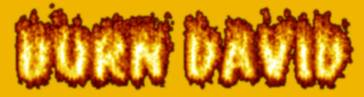
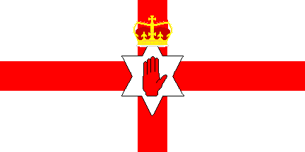

Free Kevin

Ok. This is NOT due to lack of security at mavarik.co.uk. mavarik is my buddy, and i just went round to his
house and read the PW offa his notebook.
www.mavarik.co.uk he hopes to make the premier hangout for hackers in Northern Ireland, I hope mav
doesen't get too pissed off that i did this on him ;-0
David Habanec is the reason of this defacement. For many years the alt.ph.uk crew have suffered
his stupid postings, his continued trys to be leet, and finally its over. David got busted, for
grabbing accounts from Currantbun.com's flawed signup script, and the trial is in October.
The UK Scene hopes to put in an appearence, wearing riotmaster's totally kewl "Burn David" T-shirts.
David. Our Hearts are with you, we hope you don't come back.

Shouting out to: alt.ph.uk
visit #hackers_ireland on Dalnet
Every UK Hacker OUt There. Unite don't Fight.
Kewl People: CPW, g00dsp33d, m0zy, you know who.